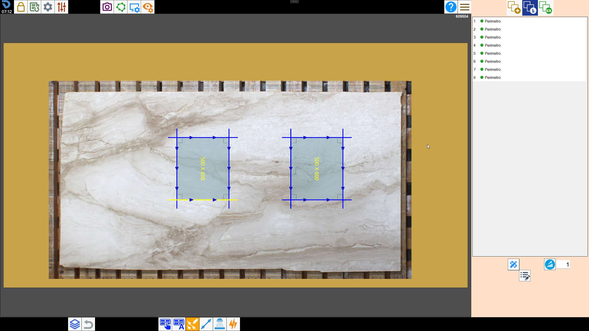
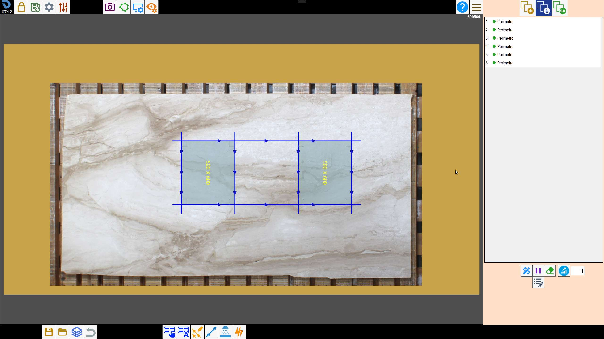
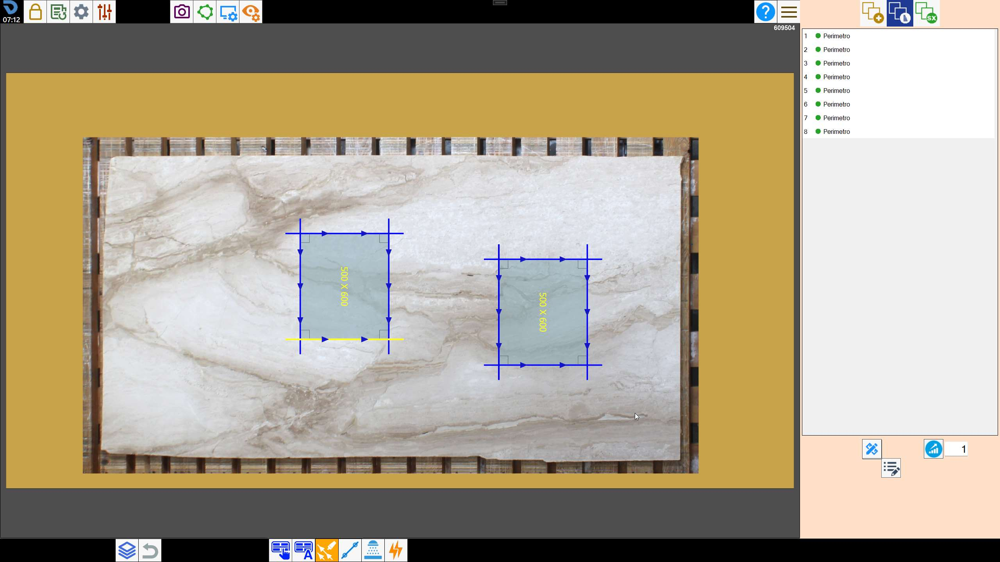
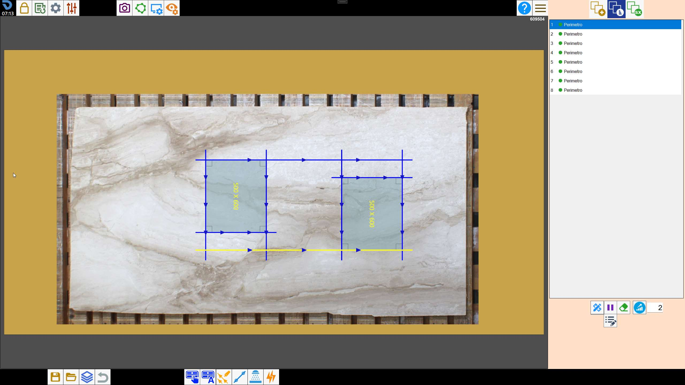
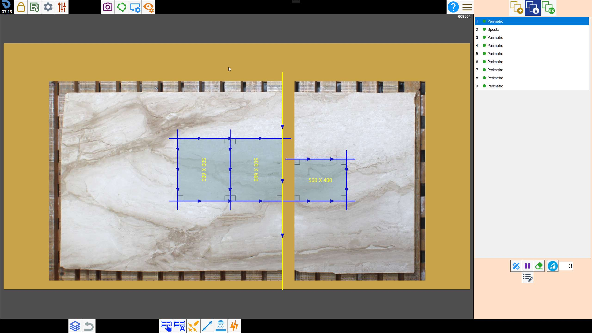
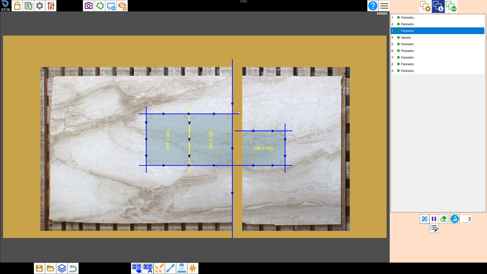
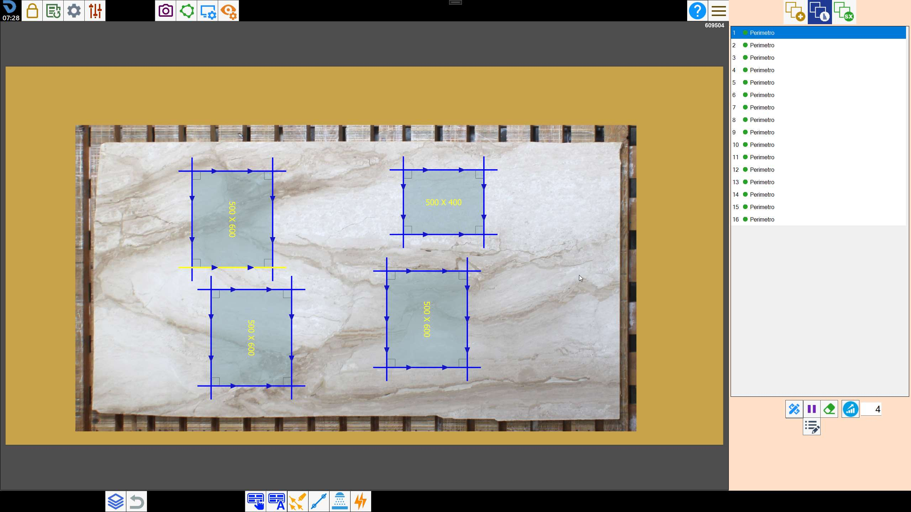
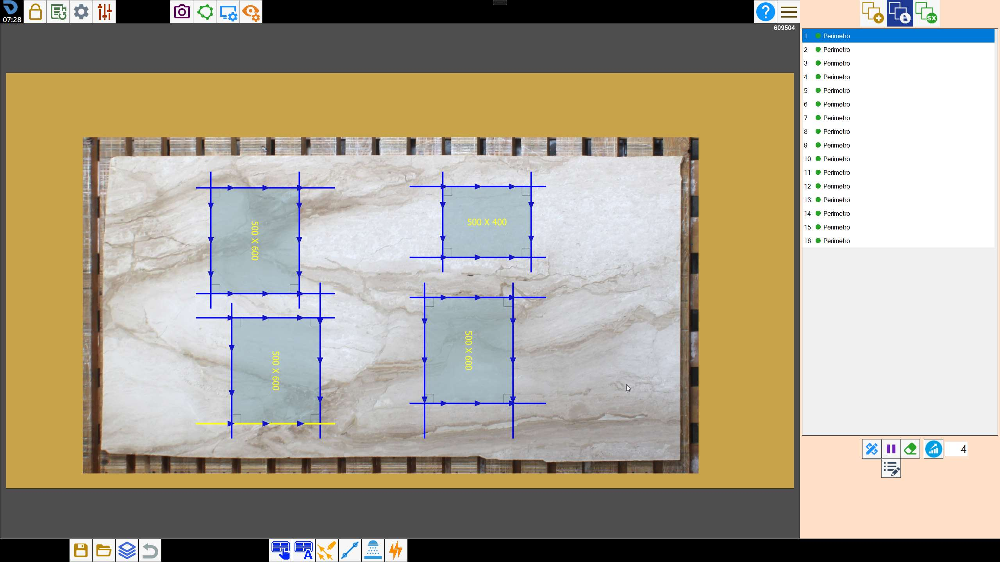
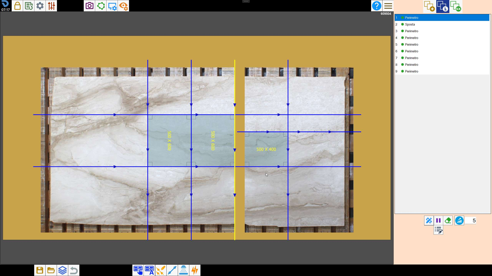

Nella pagina di gestione dei tagli è possibile applicare delle ottimizzazioni per la macchina SX per migliorare la combinazione dei mandrini in fase di taglio.
Sara sufficiente inserire il tipo di ottimizzazione e premere il tasto.
Mode 1
Due tagli diversi sulla stessa linea retta diventano un unico taglio.
 |  |
Mode 2
Prova a realizzare tutti i tagli della stessa lunghezza (massima).
 |  |
Mode 3
Dopo l’utilizzo del sistema di movimentazione è impossibile spostare manualmente il taglio prima dello spostamento. Con l'ottimizzazione 3 il software antepone al movimento il taglio che la macchina può eseguire.
 |  |
Mode 4
Tagli di lunghezza simile diventano tagli con la stessa lunghezza. All'interno della pagina parametri è presente il parametro Distanza “Opti 4” utilizzato per questa funzione.
 |  |
Mode 5
Allunga tutti i tagli oltre il bordo della lastra e li rende di lunghezza simile (Mode 2)
 |
VIDEO